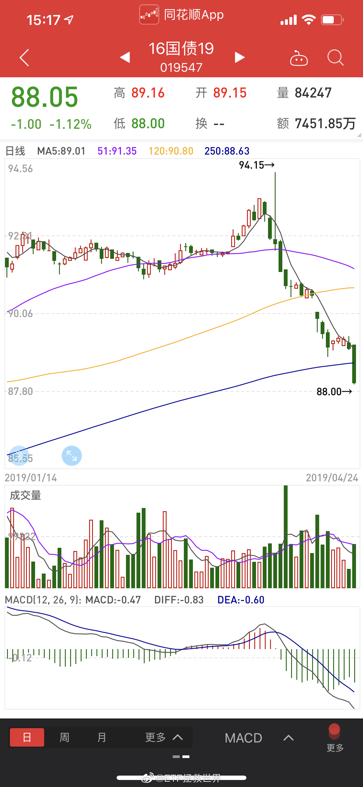

回复@叛逆的阿波罗:新浪问答的人找我说，你问答效果这么好，财经领域只有极少人有这么好的效果，但你为什么每年只回答两次，我：//@叛逆的阿波罗:良心大V，回答的这么清楚，还免费。@ETF拯救世界:无论什么品种，趋势都很重要 
回复@胡鹏171:第一，A股是全市场收益率低于债券，但很多股票和板块预期收益率高于债券。第二，长期称重，短期投票。如果投资只看预期收益率就可以来回切换那就太简单了。//@胡鹏171:既然有货币收紧的预期，为什么投资者更多的抛售收益率高于股票的国债？目前国债有3.4，股票才3.0几吧@ETF拯救世界:无论什么品种，趋势都很重要
上午有朋友问，为什么你认为要调整不减仓。有两个原因：第一，历史上熊转牛初期，出现大幅调整的几率大。但并不代表必然出现，比如08-09那一波。不是100%的事情，你就要权衡一下利弊得失。如果调整，你会得到什么。如果不呢，你会失去什么。第二，有些品种是所谓的投资品种。即，可以超长期持有。除非极贵，尽量少去打扰它的成长。比如成本低廉的优质股权。有些品种有交易价值，长期投资价值会差一点，比如债券 黄金 原油等。所以我们想办法做交易赚利润，但不会超长期持有。
回复@树苗儿想要喝水:债券走势第一取决于货币政策。//@树苗儿想要喝水:是不是市场认为未来的投资收益率应该会更高，所以之前国债逼近3%的收益率太低（国债价格太高），所以现在都在抛债买别的。//@ETF拯救世界:回复@留下唇印:当然会开。咱们之前卖掉的都会买回来，还会买更多。@ETF拯救世界:无论什么品种，趋势都很重要
有调整，太正常了。没有调整才不正常。甚至这样的调整幅度太小。历史上没有一两次月线级别的调整都不敢说自己是牛市。@ETF拯救世界:A股历史上除了2008年底开始的上涨，从未出现过类似这波行情的毫无回调的情况。果然历史没有简单重复的啊。
不出事，你永远也看不清一个人的真面目。出了事，你会发现有人客观追求真相，有人基于自己的立场抛弃客观，有人跟着蹭热度…不能说这些人谁对谁错，只是经过这样的事情，就会更加明白这世界的复杂性。客观真的不容易，我也要反省。无论是投资还是生活，永远都要客观，才不会离正确越来越远。